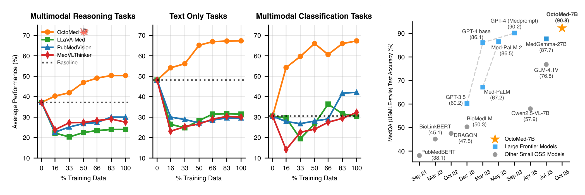
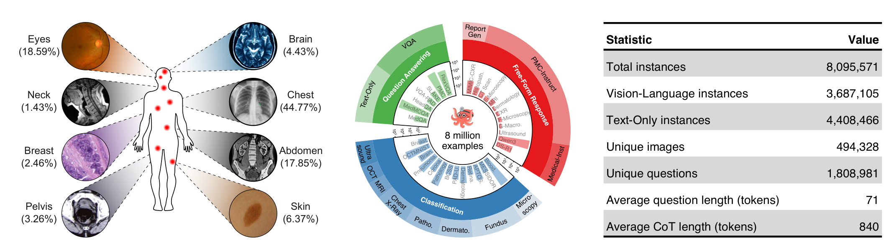
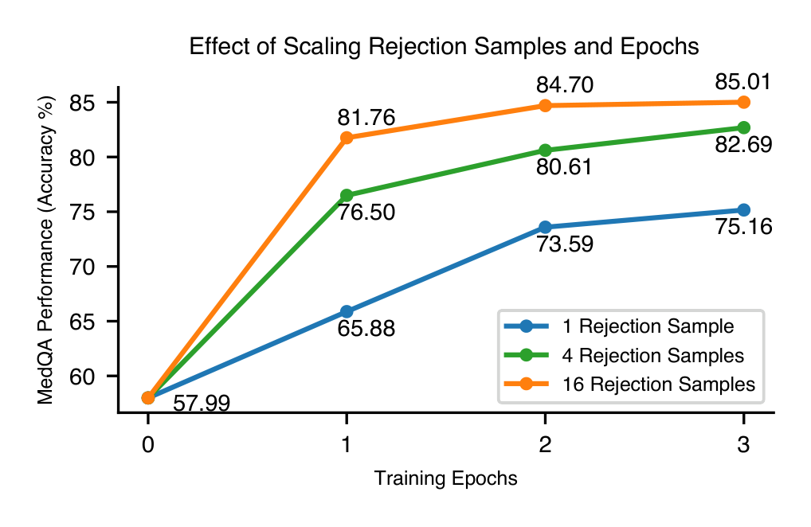
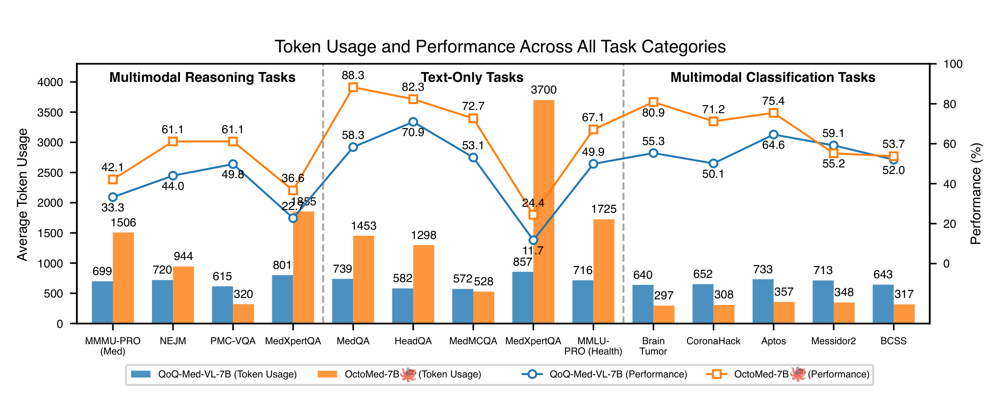
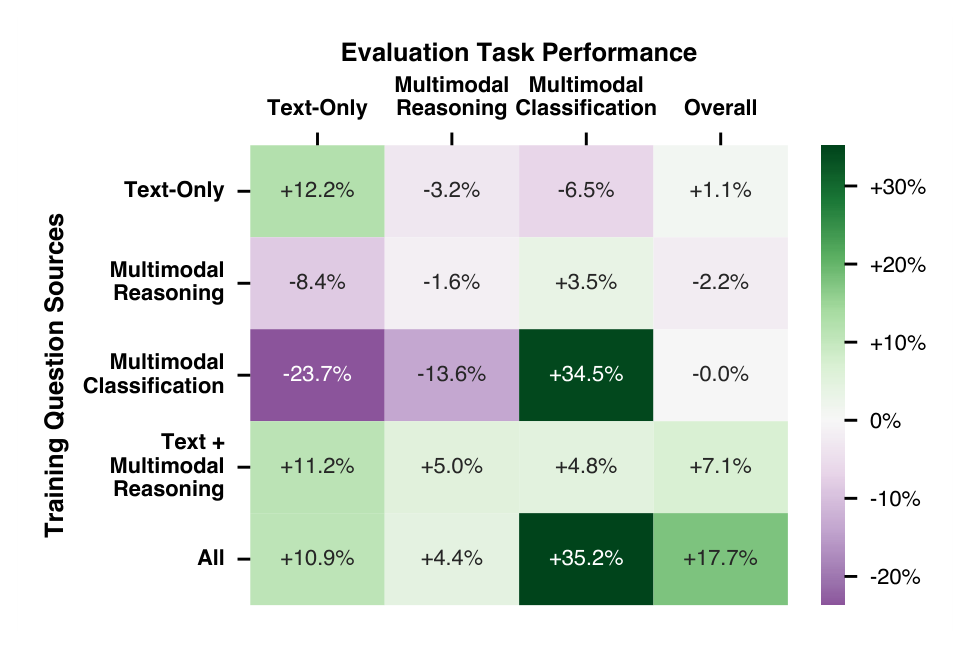
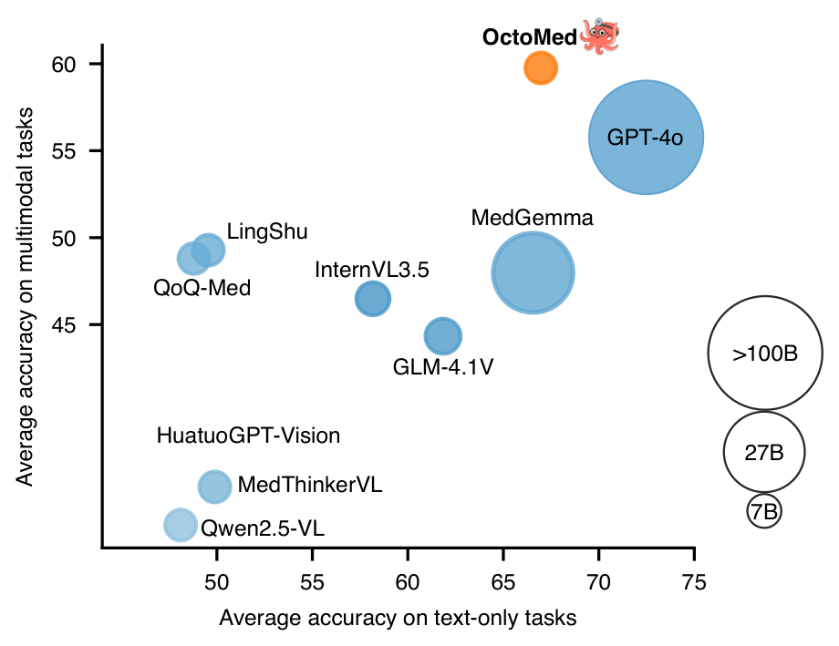
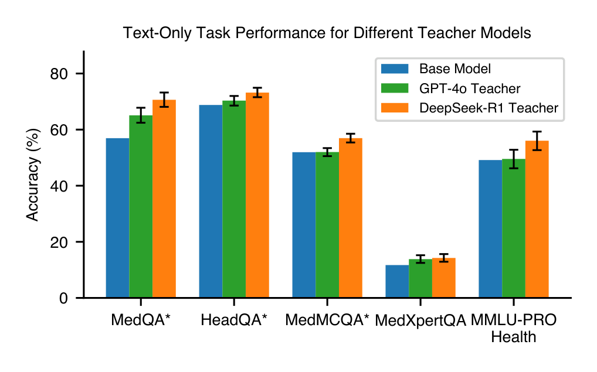
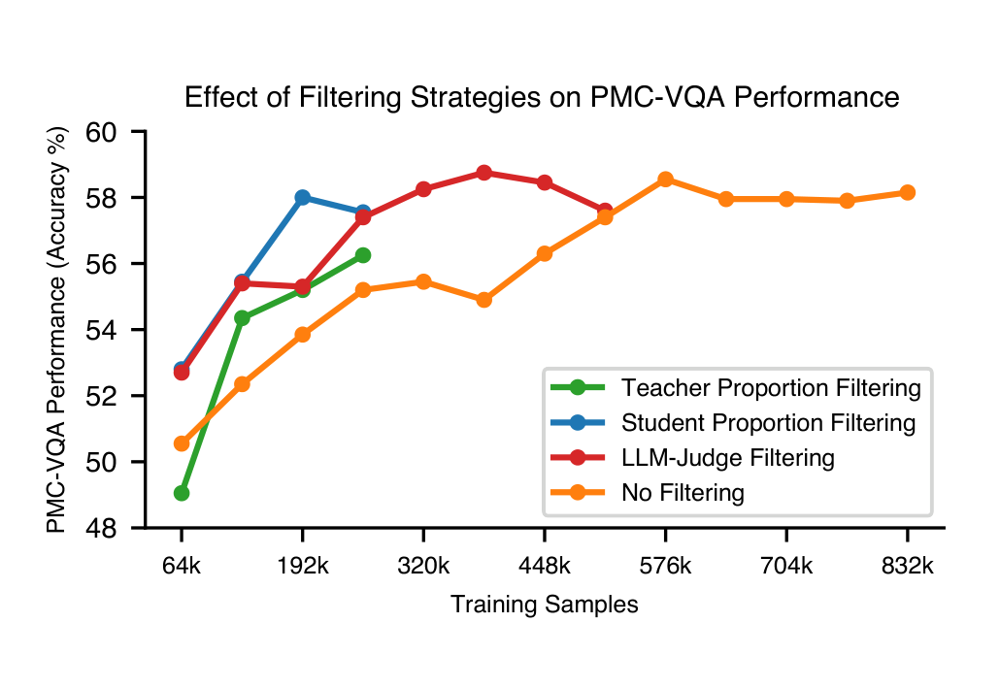
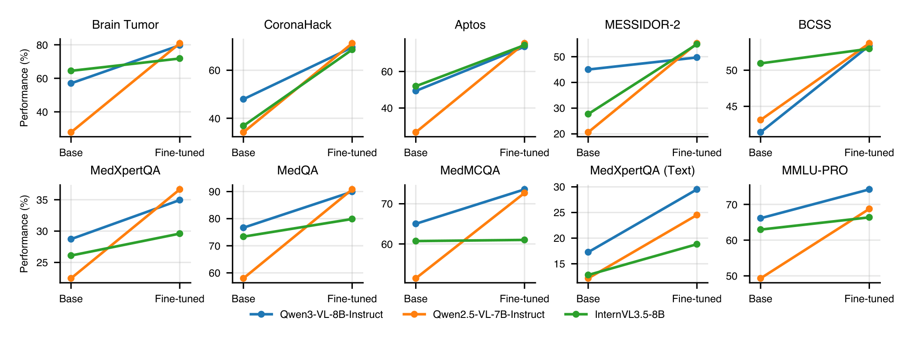

OctoMed 深读：医学多模态推理不靠新架构、不靠更大模型，凭一套"数据配方"把 7B 喂到 SOTA——多条推理轨迹为什么比多训几个 epoch 更值？
导读。这篇论文的立场很反潮流：当大家忙着发明新损失、堆 RL、做更大 backbone 时，OctoMed 把赌注全压在"喂什么数据"上。作者用一个被冻结的配方——从强 teacher（DeepSeek-R1 / GPT-4o）蒸馏带推理轨迹的样本 + 拒绝采样筛掉答错的轨迹——把规模一路推到 800 万样本、68 亿响应 token，只做监督微调（SFT），就把一个 7B 学生（Qwen2.5-VL-7B）在一大批分布外医学基准上调到开源 SOTA，多模态分类上甚至反超它的 teacher GPT-4o（67.29 vs 53.96），整体压过比它大 4 倍的 MedGemma-27B。立题问题因此很具体：给定"只做 SFT"这个约束，到底该如何构造、平衡、放大多模态推理数据，才能最有效地提升医学推理？三条主线贯穿全文：(1) 每题保留多条有效推理轨迹（1→4→16 条）比单纯多训 epoch 更能抬高峰值（MedQA 75.16→85.01）；(2) CoT 还是 direct 取决于任务是"要推理"还是"要感知"；(3) 把不同长度的轨迹混在一起训，模型会涌现出"按题目难度自动调节推理长度"的能力——难题写长、易题写短，全程没有任何显式监督。
{kind=link}

1. 核心问题：医学推理的健壮性，到底卡在架构还是卡在数据？
开篇作者给出一个被很多人忽略的判断：医学推理的健壮性，关键设计点不在架构新颖度、也不在更大的 backbone，而在"教模型怎么推理"的那批数据怎么挑。理由是医学场景和开放域有本质差别——它要在巨大的分布漂移下工作（放射、病理、眼底、皮肤、化验值、临床笔记各成一个世界），要跨多种高风险模态整合证据，还要在"答错代价极高"的前提下保持保真。一个窄而失衡的训练混合，很容易调出一个在分布内漂亮、一到分布外就崩的过拟合模型。
- 分布外才是主战场。论文的评测刻意压在 OOD 上：多模态推理基准（MMMU-PRO、MedXpertQA）大多没有训练划分，模型在测试时见到的题型与训练分布并不一致。这逼着配方去换"泛化"，而不是"刷分布内"。
- RL 多半只是在精修 SFT 已有的行为。作者引近期发现 [54]：当前 RL 范式很大程度上是在refine SFT 阶段已经习得的行为，而非引入根本性的新推理模式。这条判断直接把重心拉回 SFT——既然 RL 是精修，那把 SFT 的数据先做对、做大，回报更直接。
- "数据成分"被研究得太少。过去的工作要么发明新训练目标、要么堆大数据集，很少有人系统研究"训练混合本身的成分"——哪些题源、哪些模态、哪种轨迹长度该占多少比例。OctoMed 把这件事当成主菜。
问：既然只做 SFT、不发明新损失、不堆 RL，凭什么相信"调数据"能调出 SOTA？这不就是"大力出奇迹"换个说法吗？
引导：盯住作者的两个前提——其一，RL 只是精修 SFT 行为，所以 SFT 的天花板决定了最终天花板；其二，医学的难点是分布漂移，而分布漂移要靠覆盖与多样性来抗，覆盖与多样性恰恰是"数据成分"问题，不是"模型容量"问题。
答：这不是"大力出奇迹"，而是把"大力"用在正确的维度上。作者全文反复验证的不是"数据越多越好"，而是"在同样的数据预算下，怎么构造数据回报最高"——多轨迹比多 epoch 值（图 5）、混合题源比单一题源稳（图 3）、CoT 与 direct 各有适用面（表 1）、过滤只省早期不抬峰值（图 4）。每一条都是"成分"层面的控制变量实验，而不是单纯扩规模。规模（8M）只是把已经验证有效的成分放大到能拿 SOTA 的量级。
Takeaway：真问题不是"要不要换架构"，而是"在只做 SFT 的约束下，数据的成分怎么配"。OctoMed 的全部贡献都长在这个问题上：先把"什么成分有效"逐个做成消融，再把有效成分放大到 8M。
2. 贡献拆解：作者明确提出了什么？
作者明确提出的贡献（论文 §1 列出的三条 + 数据集）：
- State-of-the-Art：用所提配方训出 OctoMed，在多样的医学推理基准上拿到开源 SOTA（图 1 / 表 2），并且在推理密集的纯文本任务上也有竞争力——这是很多多模态模型的短板。
- 放大并多样化推理轨迹：明确给出"每题多条有效轨迹 + 扩大模态覆盖，比单纯多训 epoch 更有效"这一发现，并据此把配方放大到"目前最大的医学推理数据集"。
- 涌现的任务感知推理：在"不同长度轨迹混合"上训练，会让模型按任务复杂度动态调节推理深度——难题/OOD 上写更长更细，无需显式监督。这一长度信号可被未来的 post-training / 数据过滤复用。
- 数据集本身：构造了 8,095,571 个样本、约 68 亿响应 token 的医学多模态推理数据集（图 2），每条轨迹经拒绝采样筛过。
读数提醒：这篇的"评测姿态"要先标清楚
OctoMed 是把一个通用 VLM（Qwen2.5-VL-7B-Instruct）当学生、用蒸馏数据 SFT 出来的，对比对象既有同档开源小模型（<10B），也有 GPT-4o、DeepSeek-R1 这类大/专有系统。所以"反超 GPT-4o"要理解成"在医学多模态分类这一类任务上、用 GPT-4o 当 teacher 蒸出的学生反超了 teacher"，而不是"7B 全面碾压 GPT-4o"。论文也诚实写明：DeepSeek-R1 那一列是文本-only，多模态格子为空（"-"）。
读者能进一步推断的是：这篇真正推进的单一变量是"训练混合的成分设计"。它没有新架构、没有新损失、没有 RL，方法论的"新"全在数据侧——把"多轨迹=正则化""轨迹长度多样=难度自校准的种子""题源混合=互补知识"这几条做成可验证的消融，再放大。它也把代价摆得很清楚：偏多选题、依赖 teacher 质量、算力账本未公开、无代码仓库。
3. 数据：8M 样本 / 6.8B token，怎么"配"出来的
OctoMed 的数据集是全文的产物，也是它的主张本身。图 2 把它拆成三块看：左是成像模态与解剖部位的分布，中是任务类型与源数据集，右是关键统计。
{kind=link}

| 统计量 | 数值 |
|---|---|
| Total instances（总样本） | 8,095,571 |
| Vision-Language instances（图文样本） | 3,687,105 |
| Text-Only instances（纯文本样本） | 4,408,466 |
| Unique images（唯一图像） | 494,328 |
| Unique questions（唯一问题） | 1,808,981 |
| Average question length（平均问题长，token） | 71 |
| Average CoT length（平均推理链长，token） | 840 |
3.1 防数据污染：16-gram 去重 + 图像字节哈希去重
因为评测压在 OOD、且很多基准与训练源同宗（都来自 USMLE / PMC 等），测试集泄漏是这类工作最容易翻车的地方。论文的做法（§3 Data Preprocessing）：(1) 纯文本侧按 S1 [29] 的流程，在所有训练问题与文本基准之间做 16-gram 去重；(2) 图像侧用 hashlib 对所有训练/测试图的字节做哈希，删掉精确重复的图，保证训练集里没有测试图。所有图像统一 smart-resize 到最大 262,144 像素（512×512）；分类任务做分层采样平衡类别。
三个"知识源"的划分（§4 与附录 B）也值得记，它是后面图 3 的实验骨架：Text-Only（MedQA / HeadQA / MedMCQA 等 USMLE 风格）、Multimodal Reasoning（MMMU-PRO / MedXpertQA 等；因这些基准缺训练划分，作者改用 PMC-VQA 训练子集蒸馏出的轨迹当题源）、Multimodal Classification（眼底 Aptos/MESSIDOR2、病理 BCSS、脑瘤 MRI 等诊断分类）。
4. Pipeline：teacher 生成 → 拒绝采样筛对 → 学生 SFT 复刻
整条流水线（§2 Methodology）是一个被作者刻意做"窄"的知识蒸馏闭环，目的是把变量收干净，好逐个消融。
三步闭环
- 题源 $\mathcal{D}$ → teacher $\mathcal{T}$ 生成轨迹。给定监督数据集 $\mathcal{D}=\{(x_i,y_i)\}$（$x$ 是临床问题/提示，$y$ 是正确答案；多选题里 $y\in\mathcal{Y}$ 是有限选项集），用强 teacher（DeepSeek-R1 / GPT-4o）对每题采样，生成中间推理步骤 $r_i=(r_i^{(1)},\dots,r_i^{(T)})$ 并落到最终答案 $\hat y_i$。
- 拒绝采样：只留答对的轨迹。用打分函数 $S(x_i,r_i,y_i,\hat y_i)$ 判定 teacher 的最终答案对不对，正确才进"接受集" $\mathcal{R}^+$。因为几乎所有训练任务都是可验证的多选题，$S$ 只需比对 $\hat y_i$ 与 $y_i$。
- 学生 $\sigma$ 在 $\mathcal{R}^+$ 上 SFT。学生学着复刻 teacher 的推理轨迹。"只学答对的轨迹"保证学生学到的不只是"看起来像样的认知步骤"，更是导向正确结论的步骤——这在医学里是硬要求。
公式读法：拒绝采样在这里做的是"质量门"而非"难度门"
式 1–2 的核心是把"答案正确性"当成唯一的过滤信号。它不判断题难不难、轨迹长不长，只问"这条思路最后答对了吗"。于是同一道题可能有多条都答对的轨迹同时入选——这正是后面"多轨迹"的来源。把质量门设在结论而非过程，是因为医学里"过程看着合理但结论错"比"啰嗦但对"危险得多；而结论的对错在多选题上恰好可廉价验证。
5. 方法：把"多条正确轨迹"理解成正则化，把"长度多样"理解成自校准的种子
这一节是全文的机制核心。OctoMed 没有新公式，但它的几个数据决策背后都有可推导的道理。下面逐条用"先讲为什么需要、再讲是什么、并从两个角度交叉验证"的方式拆开。
5.1 多条正确轨迹 ≈ 一种数据增强 / 正则化——为什么比多训 epoch 更值？
动机：给定题量有限（医学高质量题贵），怎么把同一批题"榨"出更多有效监督？先验工作（OpenThoughts [12]、II-Medical [21]）的答案是每题留多条推理轨迹。OctoMed 在 MedQA 上把这件事做成干净的消融：每题采 16 条，按 $\mathcal{R}^+$ 分别只留 1 / 4 / 16 条，各训 3 epoch，共 9 个 checkpoint，全部在未见过的 MedQA 测试集上评。
{kind=link}

问：早期"加轨迹"和"加 epoch"效果相近，能不能就此说"多轨迹只是变相多训几遍"？为什么峰值还能再高 10 个点？给我两条独立的解释。
路径 A（梯度噪声 / 经验风险的视角，自下而上）：多训一个 epoch，是把同一条轨迹 $(x_i,r_i)$ 再喂一遍——它增加的是对"这一条具体推理路径"的拟合强度，梯度方向高度相关，到一定程度就开始过拟合这条路径的措辞与结构。而每题换一条不同的正确轨迹 $r_i^{(k)}$，喂的是"同一题→同一答案"下的不同中间过程：标签（最终答案）不变，但输入侧的推理序列在变。这等价于在"条件分布 $p(r\mid x,y)$"这一维上做数据增强——模型被迫学"通向正确答案的多条路都对"，而不是"背下某一条路"。增强带来的梯度是去相关的，正则化效应让它能爬到比"重复同一条"更高的峰值。这与"在标签/输出侧引入一致性约束以缓解过度自信、提升泛化"的正则化思路同源（参见 §references 的方法论说明）。
路径 B（不变性 = 显式抹平虚假特征，自上而下）：从"模型该对什么不变"的角度看，一道医学题的正确性不应依赖于"用哪种措辞、哪条推理顺序"到达答案。给同一题配多条都答对的轨迹，等于显式告诉模型"这些不同的推理表面形式指向同一个正确结论"，把"推理路径的表面形式"标成一个该被抹平的虚假变量。只留 1 条时，模型无从区分"哪些是路径特有的偶然措辞、哪些是真正的医学逻辑"，容易把偶然当必然；留 16 条，偶然措辞在多条之间被平均掉，留下的才是跨路径稳定的逻辑骨架。两条路径殊途同归：一条从梯度去相关说"增强抬峰值"，一条从不变性说"抹平虚假特征抬泛化"。
Takeaway：多轨迹不是"多训几遍"的同义词。早期它和多 epoch 撞脸，是因为两者都在增加监督量；但它额外提供了"通向同一答案的多样过程"，这层多样性是 epoch 给不了的正则化，所以峰值能再高近 10 个点。基于此，正式配方定为每题 16 轨迹 × 3 epoch。
5.2 CoT 还是 direct？取决于任务是"要推理"还是"要感知"
动机：提示模板会显著改结果。作者假设——CoT 利于多步推理（如 MedQA），direct 利于简单感知（如糖网分级）。验证方式干净：同一个 100k 子集，只改提示风格，训两个学生。
| 类别 | 任务 | Direct | CoT |
|---|---|---|---|
| 多模态分类 | Brain Tumor | 71.32 | 70.56 |
| CoronaHack | 62.82 | 66.19 | |
| Aptos | 75.98 | 73.60 | |
| MESSIDOR2 | 66.29 | 53.71 | |
| BCSS | 50.90 | 52.58 | |
| Overall | 65.46 | 63.33 | |
| 多模态推理 | MMMU-PRO (H) | 12.59 | 31.82 |
| NEJM | 23.23 | 45.62 | |
| PMC-VQA | 33.85 | 49.25 | |
| MedXpertQA | 22.65 | 25.90 | |
| Overall | 23.08 | 38.15 | |
| 纯文本 | MedQA | 32.13 | 69.68 |
| HeadQA | 47.70 | 72.61 | |
| MedMCQA | 34.47 | 53.38 | |
| MedXpertQA | 11.43 | 14.04 | |
| MMLU-PRO (H) | 20.42 | 51.22 | |
| Overall | 29.23 | 52.19 |
问：为什么 CoT 在推理任务上能把 23.08 抬到 38.15（多模态推理）、29.23 抬到 52.19（纯文本），却在分类任务上反而略输（65.46 vs 63.33）？
路径 A（计算预算与任务结构匹配）：CoT 的本质是给模型更多的中间计算步——把答案拆成可串联的子推断。当任务本身需要多步逻辑（USMLE 题要串联病史→鉴别诊断→排除）时，这些中间步是必需的工作内存，没有它模型只能一步蒙，于是 MedQA 这种从 32.13 跳到 69.68。而糖网分级（MESSIDOR2）这类感知-分类任务，答案几乎是"看一眼分级"的单步映射，并不需要多步链；强行加一条推理链，反而引入了出错与漂移的机会（链中任一步说错就可能带偏最终判断），所以 direct 在 MESSIDOR2 上 66.29 反超 CoT 的 53.71。
路径 B（监督信号的"形状"匹配）：SFT 是在学 teacher 轨迹的形状。推理任务的正确轨迹天然是长链，学生学长链 = 学对了该任务的解题程序；分类任务的正确"轨迹"其实就是一个标签，硬套 CoT 等于让 teacher 编一段"为什么是这个分级"的事后解释，这段解释可能不是该决策的真实依据，学生学到的是冗余甚至误导的中间态。两条路径一致指向：提示风格要匹配任务的内在计算深度。
Takeaway：CoT 不是免费的——它在"需要多步"的任务上是工作内存，在"一步到位"的感知任务上是噪声源。作者最终为 SFT 选 CoT（适用面更广、可解释），并提了一个漂亮的统一视角：direct 可看作"推理链为空"的 CoT 极限。
5.3 涌现的任务感知思考：不同长度轨迹混训，模型学会按难度自调长度
动机：既然数据混合里同时有 DeepSeek-R1（长、细）和 GPT-4o（短、简）两类 teacher 的轨迹，轨迹长度天然有跨度。这层跨度会带来什么？作者发现一个没被显式监督的能力：模型在难题/OOD 上自动写更长，易题上自动写更短。
{kind=link}

问：模型从没被告诉"这题难、请写长一点"，为什么混合不同长度的轨迹就能让它学会自校准？给两条独立理由。
路径 A（条件长度分布的隐式建模，自下而上）：SFT 在最大似然意义上学的是 $p(r\mid x)$——给定问题 $x$，生成轨迹 $r$。当训练集里"难题"系统性地配长轨迹、"易题"系统性地配短轨迹时，问题的难度特征与轨迹长度在数据里就是相关的。模型为了拟合这个条件分布，必须把"$x$ 的难度线索"映射到"$r$ 的预期长度"。于是在测试时遇到一个新的难题，它的难度特征触发了"该写长"的先验——这不是被显式监督的，而是条件分布里本就编码了"难度↔长度"的统计关联，模型只是忠实地复现了这个关联。若训练集长度不随难度变（如 QoQ-Med 那样均匀），模型就学不到这种关联，长度自然对难度不敏感。
路径 B（停止时机 = 学到的"够了没"判断，自上而下）：换个角度看推理生成：每一步模型都在隐式决策"继续推 vs 给答案"。混合长短轨迹，等于给模型看了大量"什么情况下该早停、什么情况下该多想"的范例——短轨迹示范"简单题想两步就够"，长轨迹示范"难题要反复鉴别"。模型学到的是一个与问题难度耦合的停止准则：当内部对答案的不确定性低（易题）就早停，高（难题）就继续。这正好解释了为何它在没见过的 OOD 难题上也会加长——停止准则是按"当前不确定性"触发的，与具体题型无关。两条路径一致：一条说"难度↔长度的统计关联被学进条件分布"，一条说"耦合难度的停止准则被学成解题习惯"。
Takeaway：长度自校准是"混合长短轨迹"的免费副产品：只要训练数据里难度和长度相关，模型就会把这层相关学进生成过程。反过来，这条涌现出的长度信号可以反哺——用它当难度估计去过滤题、去指导后续 RL，作者把这点列为未来方向。
5.4 题源混合：互补知识，而非相互干扰
动机：训不同知识源会不会互相打架？图 3 是一张干净的"训练源 × 评测类型"迁移矩阵。
{kind=link}

为什么"全混"能既不互相干扰、又整体最高？
关键在于这三类知识其实覆盖不同的能力维度：纯文本管医学知识与多步逻辑、多模态推理管"看图+推断"、多模态分类管"细粒度感知判别"。单训一类时，模型为了拟合该类会牺牲其它维度（所以多模态分类单训会把纯文本拉到 -23.7%——它把模型推向"少推理、直接判类"的模式，恰好毁掉文本推理）。而全混时，每个维度都有足量监督各自占住一块，模型没有被迫在维度间二选一，于是负迁移消失、互补知识叠加。这与 §5.1 的"多样性即正则化"是同一个内核：多样的、互补的监督让模型学到更宽的能力底座，而不是窄而尖的过拟合。
6. 训练账本：8M 轨迹 × 3 epoch 全参微调
最终模型的配置（§5 Results 开头与 §3）：
| 项 | 最终模型（§5） | 配方实验（§3） |
|---|---|---|
| 学生模型 | Qwen2.5-VL-7B-Instruct（另在 InternVL3.5-8B / Qwen3-VL-8B-Instruct 上验证） | |
| 训练数据 | 8M 结构化推理轨迹 | 各消融对应子集 |
| 微调方式 | 全参微调（full fine-tuning） | |
| Epochs | 3 | 1–3（按消融） |
| 有效 batch size | 512 | 128 |
| 学习率 | 5e-5 | 5e-5 |
| LR schedule | Cosine，warmup ratio 0.1 | Cosine，warmup ratio 0.01 |
| 训练框架 | llama-factory [59] | |
| 推理引擎（评测） | vllm [23]，max 8192 token + 最多 10 张图（每图 ≤262,144 px） | |
评测协议（§5 Evaluation Setup）：每个模型在 5 个不同采样种子上跑、取平均，temperature 0.6、top-p 0.95，按各模型自荐的 prompt 模板评。对"先想后答"的推理模型，若它不肯结束内部思考，就按 S1 [29] 的强制退出机制追加一个 end-of-think token、逼它基于已有思考作答。
关于算力（论文未披露，不做估算）
OctoMed 的"贵"主要在数据生成侧：对 ~180 万唯一问题、每题采 16 条轨迹做 teacher 调用（DeepSeek-R1 / GPT-4o），再加 8M 样本 × 3 epoch 的全参微调。但论文没有给出 teacher 调用的总量、GPU 卡数、墙钟时间或总成本。按非负责任原则，此处不给"按论文披露数字粗略估算"的卡时——因为论文连可估算的基数都未提供。能确认的只有：student 侧是 7B 全参微调、有效 batch 512、3 epoch，用 llama-factory，属于工程上可复现的规模；真正的门槛在 teacher 蒸馏的 API/算力账单，论文未说明。
7. 实验：三类任务一张主表，外加两条机制证据
判断：主表（表 2）要回答的是"OctoMed-7B 到底比同档开源强多少、离大模型差多少"，三类任务一并看；图 7 是它的散点压缩版，图 6 单独验证"换 teacher 会怎样"。
7.1 主表：三类任务全面领先同档开源，反超 27B 与 GPT-4o（部分类）
| 类别 | 基准 | Qwen2.5-VL | HuatuoGPT | MedVLThinker | InternVL3.5 | GLM-4.1V | QoQ-Med | LingShu | OctoMed | MedGemma-27B | GPT-4o | DeepSeek-R1 |
|---|---|---|---|---|---|---|---|---|---|---|---|---|
| 方法 / 规模： SFT / SFT / SFT+RL / SFT+RL / SFT+RL / RL / SFT+RL / SFT(7B) / SFT(27B) / -(>100B) / SFT+RL(671B) | ||||||||||||
| 纯文本 | MedQA | 57.99 | 55.40 | 58.56 | 73.37 | 76.83 | 58.30 | 62.09 | 90.81 | 85.17 | 90.72 | 93.16 |
| HeadQA | 69.61 | 67.14 | 71.00 | 81.00 | 81.73 | 70.94 | 69.23 | 82.36 | 84.56 | 89.56 | 90.93 | |
| MedMCQA | 51.45 | 50.74 | 54.87 | 60.72 | 64.64 | 53.11 | 53.16 | 72.70 | 70.34 | 77.21 | 79.36 | |
| MedXpertQA | 12.16 | 10.85 | 12.91 | 12.82 | 17.67 | 11.72 | 12.54 | 24.51 | 21.89 | 30.31 | 37.30 | |
| MMLU-PRO (H) | 49.32 | 44.77 | 52.13 | 62.96 | 68.33 | 49.93 | 50.73 | 68.75 | 70.83 | 76.06 | 79.39 | |
| Overall | 48.10 | 45.78 | 49.89 | 58.17 | 61.84 | 48.80 | 49.55 | 67.83 | 66.56 | 72.77 | 76.05 | |
| 多模态推理 | MMMU-PRO (H) | 32.87 | 30.00 | 38.95 | 47.90 | 49.65 | 33.29 | 36.78 | 42.52 | 40.77 | 57.76 | — |
| NEJM | 43.76 | 44.06 | 44.31 | 52.90 | 54.81 | 44.01 | 48.43 | 61.14 | 57.06 | 69.99 | — | |
| PMC-VQA | 49.66 | 51.46 | 49.88 | 59.55 | 57.05 | 49.79 | 58.76 | 61.13 | 46.08 | 60.14 | — | |
| MedXpertQA | 22.47 | 22.63 | 24.81 | 26.10 | 28.65 | 22.74 | 26.19 | 36.65 | 33.13 | 44.38 | — | |
| Overall | 37.19 | 37.04 | 39.49 | 46.61 | 47.54 | 37.46 | 42.54 | 50.36 | 44.25 | 58.07 | — | |
| 多模态分类 | Brain Tumor | 27.82 | 37.16 | 31.07 | 64.47 | 47.72 | 55.33 | 78.99 | 80.86 | 58.33 | 65.99 | — |
| CoronaHack | 34.17 | 42.76 | 36.41 | 38.62 | 39.90 | 50.13 | 42.24 | 71.22 | 58.27 | 41.70 | — | |
| Aptos | 26.71 | 40.95 | 25.08 | 51.96 | 42.76 | 64.60 | 56.83 | 75.43 | 49.20 | 66.58 | — | |
| MESSIDOR2 | 20.63 | 33.66 | 22.40 | 27.71 | 26.86 | 59.14 | 42.86 | 55.20 | 53.09 | 45.26 | — | |
| BCSS | 43.12 | 43.72 | 48.01 | 50.95 | 52.84 | 52.02 | 52.40 | 53.72 | 35.95 | 50.28 | — | |
| Overall | 30.49 | 46.39 | 32.59 | 46.39 | 41.76 | 56.24 | 54.66 | 67.29 | 50.97 | 53.96 | — | |
三句话读这张表：(1) 开源小模型里 OctoMed-7B 几乎每行最优，纯文本总体 67.83、多模态推理 50.36、多模态分类 67.29，三类都领先同档；(2) 跨档对比——多模态分类上 OctoMed 反超 GPT-4o（67.29 vs 53.96，而 GPT-4o 正是它的多模态 teacher），整体也压过 MedGemma-27B（在每个类别 Overall 上都更高），尽管只有它 1/4 大小；(3) 离真正的大模型仍有差距——多模态推理总体 50.36 vs GPT-4o 58.07，纯文本 67.83 vs DeepSeek-R1 76.05，说明"纯 SFT 蒸馏"能逼近但还没追平最强 teacher 的上限。
{kind=link}

7.2 换 teacher：推理型 teacher（DeepSeek-R1）比指令型（GPT-4o）更会教
{kind=link}

8. 消融：把"配方有效"逐条钉死
这一节把 §5 的机制主张落到可证伪的消融上。前面已展开图 5（多轨迹）、表 1（CoT/direct）、图 3（题源），这里补两条：过滤与跨模型族。
8.1 题目过滤：省早期样本效率，但抬不了峰值——因为拒绝采样已在下游兜底
动机：能不能在送进 teacher 前就先挑掉"模糊/无解/误导"的题？作者试了三种过滤：(1) 学生比例过滤（学生采 16 次，答对数 <2 或 >14 的题剔掉——太难或太易）；(2) teacher 比例过滤（同上但用 teacher 估难度）；(3) LLM-Judge 难度评分（GPT-4.1-mini 给 1–10 分，留 3–6 的中档题）。
{kind=link}

问：过滤明明早期更省，为什么作者最终选"不过滤"？两件事不矛盾吗？
答：不矛盾，关键在过滤的收益已经被拒绝采样在下游接住了。过滤想干的是"别让低质量题污染训练"；但 OctoMed 的流水线里，每题的轨迹要过式 1–2 的答案正确性门——一道模糊/无解的题，teacher 在它上面很难稳定答对，对应轨迹大多进不了 $\mathcal{R}^+$，自然被下游降权甚至剔除。于是"前置过滤"和"后置拒绝采样"在质量把控上高度重叠，前置过滤的边际收益主要剩"早期收敛快"。既然峰值不受影响，作者就选不过滤以最大化数据覆盖（覆盖正是 §1 抗分布漂移的关键），把质量交给拒绝采样兜底。作者也点明：过滤对讲究样本效率的 RL post-training 仍有价值——那里没有 8M 的覆盖红利可吃。
Takeaway：当下游已有强质量门（拒绝采样），前置过滤就从"提质量"退化成"提早期效率"。在追求覆盖的 SFT 里，覆盖 > 早期效率，故不过滤；在追求效率的 RL 里，结论可能反过来。
8.2 跨模型族：换 backbone 结论稳，但"已被 RL 过的底座"增益更小
{kind=link}

定性证据（附录 A，正文未给图，本页据文字转述）
论文在附录给了定性轨迹分析（图 S1–S3，本页未抽取附录图），归纳出三条特性：任务通用性（不止多选 VQA，也能做开放式/描述式作答）、模态通用性（MRI/眼底/皮肤/病理间保持连贯推理）、任务感知思考（按复杂度调推理深度，与图 8 互证）。这些属定性观察，强度弱于前述定量消融，本页据论文文字记录、不夸大。
9. 局限、复现门槛与风险
- 无公开代码仓库。论文只放出 HuggingFace 模型权重（
OctoMed/OctoMed-7B），没有开源训练/数据构造代码。8M 数据集的具体混合比例、各源采样配额、teacher prompt、拒绝采样的工程细节，正文与附录只给框架，逐项复现需自行重建——这是本工作最实的复现门槛。 - 算力账本缺失。teacher 调用总量、GPU 卡数、墙钟、API 成本均论文未说明；数据生成侧（180 万题 × 16 轨迹的 R1/4o 调用）很可能是真正的大头，但无从估算。
- 偏多选题、偏胸部。打分函数 $S$ 之所以简单，是因为"几乎所有训练任务都是可验证的多选题"——这天然限制了对开放式临床生成（报告生成、鉴别诊断叙述）的覆盖；模态分布也偏胸部（44.77%），其它部位监督更稀。
- teacher 上限即学生上限。纯 SFT 蒸馏让学生逼近但未追平最强 teacher（多模态推理 50.36 vs GPT-4o 58.07；纯文本 67.83 vs R1 76.05）。它继承 teacher 的知识，也继承 teacher 的错误与偏见——医学里这意味着teacher 的幻觉/过时知识会被蒸进学生，拒绝采样只过滤"最终答案错"，过滤不了"答案对但推理里夹带错误事实"。
- "长度=难度"是相关、非因果保证。图 8 的任务感知长度是涌现现象，作者也只把它当"可能有用的难度信号"。把它直接当难度估计去过滤/指导 RL 时，需警惕"模型啰嗦≠题真难"的反例。
- 评测是 5 seed 均值、强制退出。对"先想后答"模型用了强制退出截断推理，这对那些需要更长思考的对手可能略压其表现——跨模型比较时要记得这层评测设定差异。
10. 结语：一句话与三条带走的判断
一句话：OctoMed 证明了在医学多模态推理上，"把数据配方做对、再放大"可以替代"换架构/堆 RL/上更大模型"——纯 SFT 蒸馏 + 拒绝采样 + 多轨迹多模态覆盖，就能把 7B 学生喂到跨分布开源 SOTA。
三条带走的判断（建议的阅读路径）
- 多样性是 epoch 买不到的正则化。每题多条正确轨迹把"通向答案的过程"做成增强，抬的是峰值不只是收敛速度（图 5：75.16→85.01）。读这篇先读 §5.1。
- 提示风格要匹配任务的内在计算深度。CoT 是推理任务的工作内存、是感知任务的噪声源（表 1）；direct 是"空推理链"的 CoT 极限。
- 长度自校准是混合长短轨迹的免费副产品。只要训练里难度和长度相关，模型就把"难写长、易写短"学进生成过程（图 8），还能反哺难度估计。
阅读路径：§1 立题（数据 > 架构）→ §4 pipeline（蒸馏+拒绝采样三步）→ §5 机制（多轨迹正则化 / CoT 适用面 / 长度涌现 / 题源互补）→ §7 主表（以小搏大）→ §8 消融（过滤只省效率、跨族稳健）→ §9 局限（无代码、teacher 上限、偏多选题）。
11. 参考与图片出处
- Timothy Ossowski, Sheng Zhang, Qianchu Liu, Guanghui Qin, Reuben Tan, Tristan Naumann, Junjie Hu, Hoifung Poon. OctoMed: Data Recipes for State-of-the-Art Multimodal Medical Reasoning. arXiv:2511.23269v1, 2025. UW–Madison / Microsoft Research. 模型权重：
huggingface.co/OctoMed/OctoMed-7B。无公开训练/数据代码仓库。 - 论文引用的关键外部工作（按本页出现）：DeepSeek-R1 [13]、GPT-4o [20]、Qwen2.5-VL [4]、InternVL3.5 [42]、GLM-4.1V [16]、S1 强制退出/去重 [29]、CoT prompting [45]、OpenThoughts [12]、II-Medical [21]、llama-factory [59]、vllm [23]、"RL 主要精修 SFT 行为" [54]、数据混合理论/实证 [40][26]。以上均按原论文引用编号列出，不另作转引。
- kexue:su 归因说明（红线）：本页 §5 的机制推导（多轨迹=正则化、CoT 适用面、长度自校准、题源互补）按
kexue:su的方法论展开（动机→机制→假设→≥2 独立验证）。检索kexue:su语料库时未返回与本文具体主张（医学 SFT 数据配方 / 拒绝采样多轨迹 / 推理长度涌现）真正相关的卡片（返回的多为 NLP 预训练/损失设计类条目，相关度不足）。按归因红线，仅应用方法论，不臆造 苏剑林 引用。§5.1 提到的"输出侧一致性约束缓解过度自信"为正则化领域的通用思路，此处作为方法论背景陈述，不挂具体[archives/XXXX]。 - 图片出处：本页所有图（图 1–9）均为从 arXiv PDF 2511.23269v1 经 caption-anchored 抽取器（
extract_figures.py，PyMuPDF）提取的本地 PNG，用于学术评注。图 4（过滤消融）与图 8（token 用量）因 caption 紧贴正文/全宽布局未被自动抽取器命中，改用 PyMuPDF 按页面坐标裁剪同一区域获得，非盲裁页面渲染。表格均转写自论文 Table 1 / Table 2 与图 2 右栏统计表、§3/§5 训练设置；表 2 为全转写。CVF 页：openaccess.thecvf.com/.../Ossowski_OctoMed_..._CVPR_2026_paper.html（已验证可访问）。